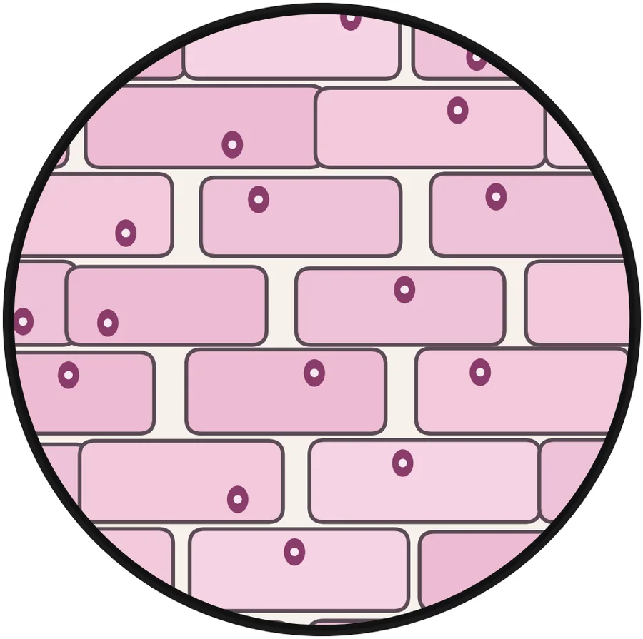
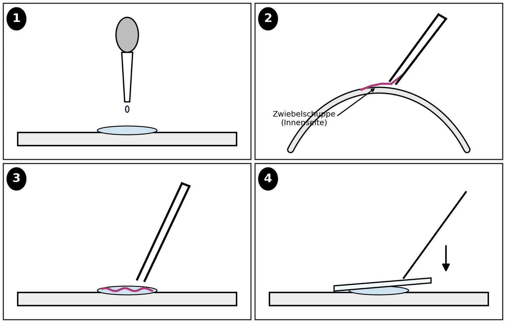
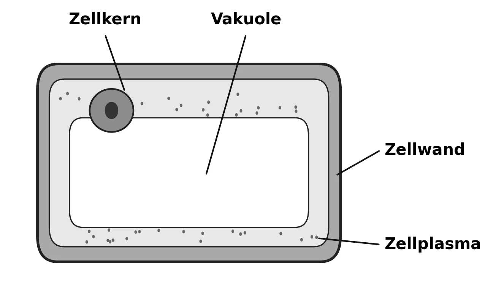

1Nenne zwei Regeln, die du beim Arbeiten mit dem Mikroskop beachten musst.
NIVEAU E–F
1Erkläre, warum man beim Mikroskopieren immer mit der kleinsten Vergrößerung beginnt.
Du hast 3 Minuten. Schreibe leise auf dein Arbeitsblatt. Vorlesen lassen ist erlaubt.
Einstieg · Impuls
Schätze!
2 Min. · Einzelarbeit · AB S. 1
Dieses Zwiebelhäutchen ist so groß wie ein Fingernagel.
Schätze: Wie viele Bausteine stecken darin?
0etwa 10
0etwa 100
0mehrere Tausend
1Stelle eine Vermutung auf: Was wirst du im Zwiebelhäutchen unter dem Mikroskop sehen? Zeichne deine Vermutung in den kleinen Kreis.
Einstieg · Impuls
Schau genau hin!
3 Min. · Plenum

Schematische Darstellung, eigene Zeichnung
1Was fällt euch auf?
2Was überrascht euch daran?
3Welche Frage stellt sich euch dabei?
Einstieg · Fragenentwicklung
Unsere Frage für heute
Plenum
Erarbeitung I · Üben am Gerät
Mikroskop-Trainer
freiwillig · Partnerarbeit
Stelle das Zwiebelhäutchen scharf. Beginne mit dem kleinsten Objektiv. Beschreibe, wie sich das Bild bei stärkerer Vergrößerung verändert.
Gesamtvergrößerung
Sichtfeld (Durchmesser)
Erarbeitung I · Präparat
Aufgabe 2: Präparat herstellen
12 Min. · Partnerarbeit · AB S. 2

A2Führe die Untersuchung durch: Stelle ein Feuchtpräparat vom Zwiebelhäutchen her. Gehe nach den Schritten 1 bis 4 vor.
Erarbeitung I · Präparat
Die vier Schritte
12 Min. · Partnerarbeit · AB S. 2
Bringe die vier Schritte in die richtige Reihenfolge. Tippe sie der Reihe nach an.
Ziehe mit der Pinzette ein kleines Stück Häutchen von der Innenseite einer Zwiebelschuppe ab.Setze das Deckglas schräg auf und lasse es langsam sinken. Sauge zu viel Wasser mit Filterpapier ab.Gib mit der Pipette einen Tropfen Wasser auf den Objektträger.Lege das Häutchen in den Wassertropfen. Es darf sich nicht falten.
Sicherheit
Das Messer benutzt nur die Lehrkraft.Deckgläser sind aus Glas und gehen leicht kaputt.Trage das Mikroskop immer mit zwei Händen.
Erarbeitung II · Zeichnung
Beobachten und zeichnen
12 Min. · Einzelarbeit · AB S. 2–3
A3Beschreibe, was du bei kleiner Vergrößerung siehst. Schreibe nur auf, was du wirklich siehst.
A4Stelle drei Zellen, die sich berühren, in einer mikroskopischen Zeichnung dar. Kennzeichne die Bestandteile, die du erkennen kannst, mit Beschriftungslinien.
Erarbeitung II · Zeichnung
Zeichenregeln: Prüfe deine Zeichnung
Einzelarbeit · AB S. 3
Prüfe deine Zeichnung mit deiner Partnerin oder deinem Partner. Tippe an, was erfüllt ist.
Zeichne mit einem spitzen Bleistift.
Zeichne einen Kreis. Er ist dein Sichtfeld.
Zeichne nur, was du wirklich siehst.
Zeichne klare, einfache Linien. Kein Schatten, kein Ausmalen.
Zeichne Beschriftungslinien mit dem Lineal. Sie kreuzen sich nicht.
Schreibe unter die Zeichnung: Objekt und Vergrößerung.
Sicherung · Vergleich
Vergleich mit dem Schema
8 Min. · Partnerarbeit · AB S. 4

A5Beschreibe, was an deiner Vermutung (Aufgabe 1) richtig war und was nicht.
Sicherung · Zusatz
Zusatz für Schnelle
Differenzierung
NIVEAU E
ZVergleiche deine Zeichnung mit der Zeichnung deiner Partnerin oder deines Partners. Nenne zwei Gemeinsamkeiten und einen Unterschied.
NIVEAU F
Z1Vergleiche deine Zeichnung mit dem Schema einer Pflanzenzelle in deinem Buch. Nenne zwei Bestandteile, die du im Mikroskop nicht gesehen hast.
Z2Erkläre, warum das Zwiebelhäutchen keine Chloroplasten hat, obwohl es eine Pflanzenzelle ist.
Abschluss · Merksatz, Exit-Ticket
Merksatz und Exit-Ticket
5 Min. · AB S. 4
A6Beschreibe den Bau einer Zwiebelzelle in zwei Sätzen.
Die Zwiebelhaut besteht aus vielen Zellen. Sie liegen wie Ziegelsteine nebeneinander. Jede Zelle hat eine Zellwand, Zellplasma, einen Zellkern und eine große Vakuole.
Exit-Ticket:Nenne eine Sache, die dich heute überrascht hat.
Vertiefung · Weiter entdecken
Mehr Präparate erkunden
freiwillig
Schau dir echte Präparate am Bildschirm an. Du kannst vergrößern und durch die Schärfeebenen fokussieren (kostenlos, ohne Anmeldung).